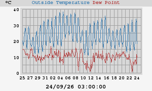
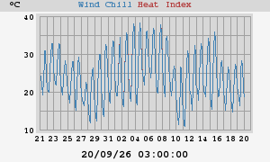
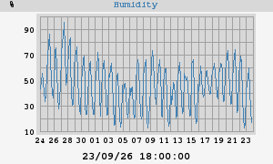
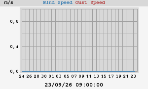
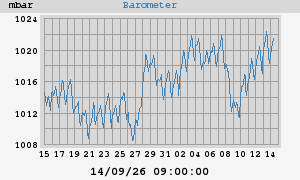
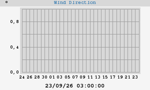
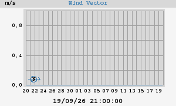

Gráficos y estadísticas mensuales








|
Temperatura máxima Temperatura mínima |
39,2°C - 04/09/26 16:27:04 14,9°C - 02/09/26 07:48:59 |
| Mínima sensación térmica | 14,9°C - 02/09/26 07:48:59 |
|
Humedad máxima Humedad mínima |
81% 01/09/26 07:30:17 11% 04/09/26 16:20:16 |
|
Máximo punto de rocio Mínimo punto de rocio |
19,7°C 04/09/26 21:04:42 2,6°C 03/09/26 14:36:46 |
|
Presión máxima Presión mínima |
1021,9 mbar - 03/09/26 10:53:58 1014,1 mbar - 01/09/26 18:57:59 |
| Lluvia total | 0,0 mm |
| Máxima tasa de lluvia | 0,0 mm/hr - 01/09/26 00:00:01 |
| Velocidad máxima del viento | 0,0 m/s desde N/A - 01/09/26 00:00:01 |
| Velocidad media del viento | 0,0 m/s |
|
Velocidad media del vector Dirección media del vector |
N/A 90° |
|
Temperatura máxima Temperatura mínima |
40,6°C - 06/07/26 18:52:08 -5,4°C - 06/01/26 07:26:21 |
| Mínima sensación térmica | -5,4°C - 06/01/26 07:26:21 |
|
Humedad máxima Humedad mínima |
99% - 16/01/26 06:54:42 8% - 07/08/26 18:40:07 |
|
Máximo punto de rocio Mínimo punto de rocio |
21,2°C - 14/08/26 19:53:36 -8,7°C - 06/01/26 20:23:00 |
|
Presión máxima Presión mínima |
1030,2 mbar - 21/02/26 11:19:03 986,0 mbar - 05/02/26 09:40:00 |
| Lluvia total | 335,2 mm |
| Máxima tasa de lluvia | 185,8 mm/hr - 03/05/26 00:44:57 |
| Velocidad máxima del viento | 0,0 m/s desde N/A - 01/01/26 00:00:04 |
| Velocidad media del viento | 0,0 m/s |
|
Velocidad media del vector Dirección media del vector |
N/A 90° |






